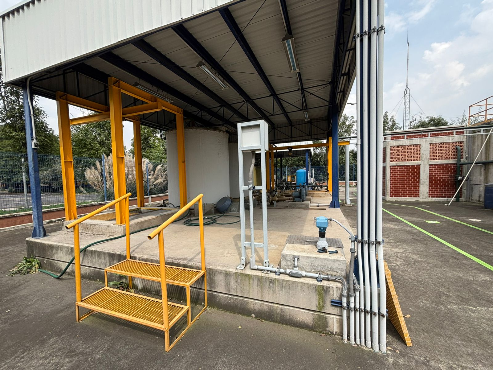
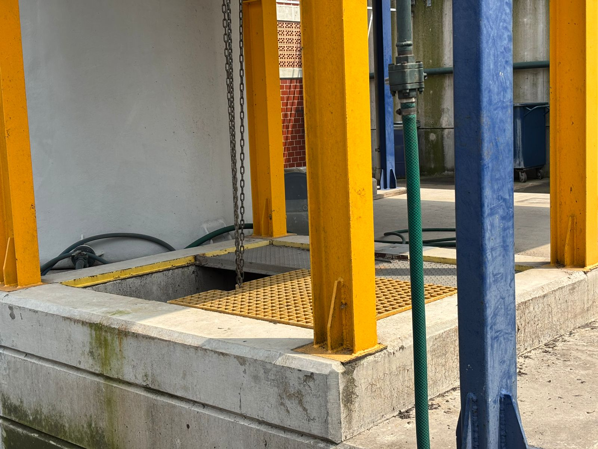
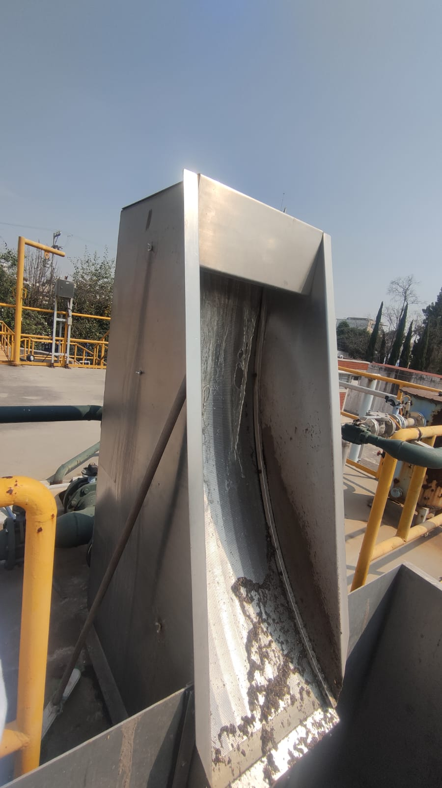
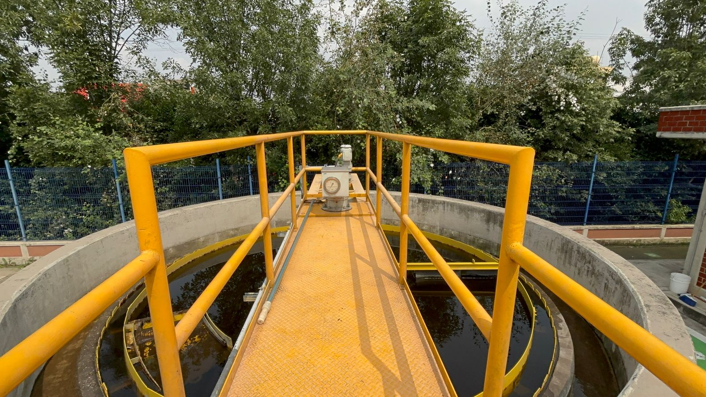
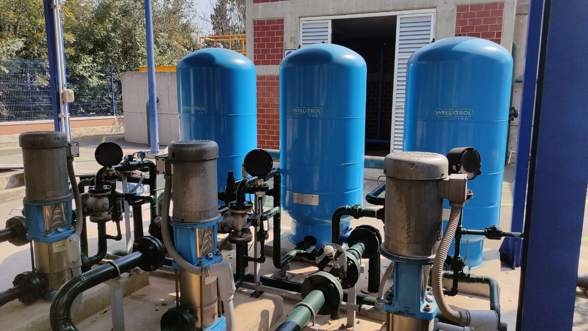
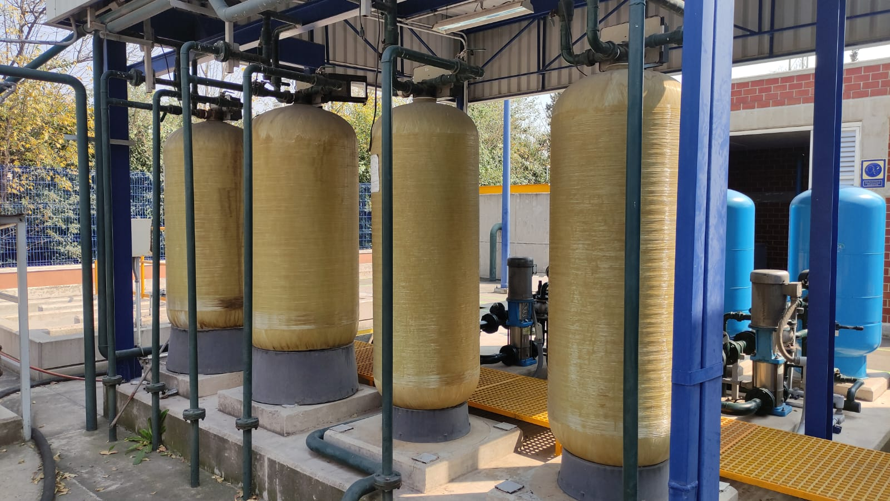
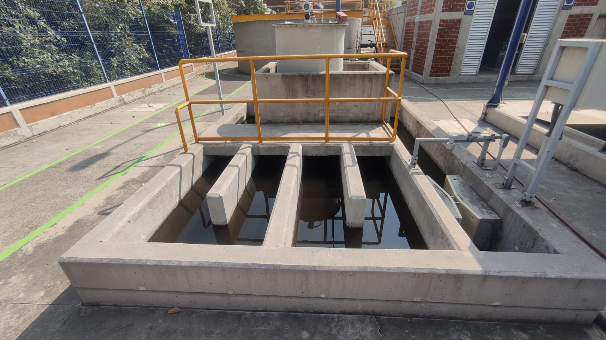
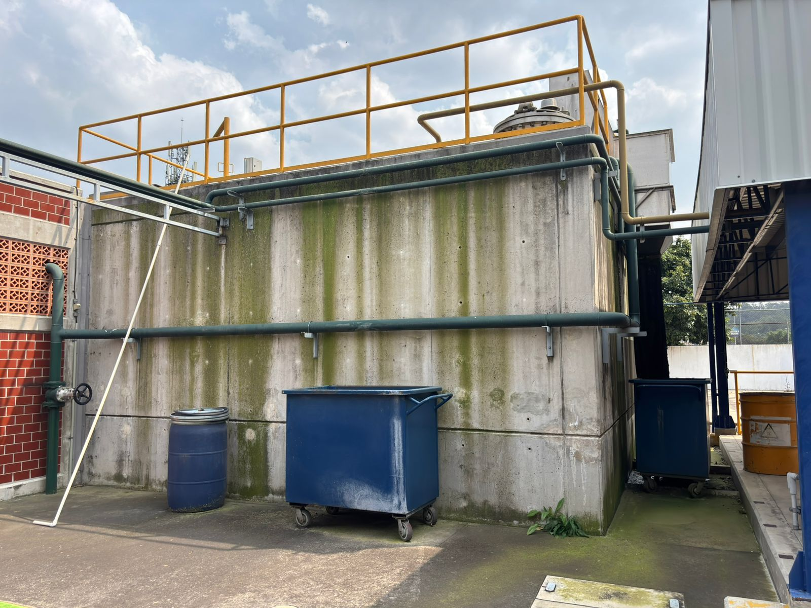

¿Cómo funciona?
Del agua cruda al riego sustentable: así transforma la PTAR cada gota
Agua Cruda
Agua Cruda
Es el agua residual de la FES Acatlán tal como llega a la PTAR, proveniente del uso de sanitarios. Contiene sólidos, materia orgánica, grasas, contaminantes disueltos y microorganismos. Su composición puede variar mucho a lo largo del día, es importante conocer su caudal y características para operar el sistema adecuadamente.

Rejilla Gruesa
Reja de sólidos gruesos
Es la primera barrera mecánica del tratamiento. Se cuenta con un contenedor al ingreso de cárcamo de almacenamiento de agua cruda que retiene sólidos grandes como plásticos, telas, ramas o basura. Esta etapa protege a los equipos posteriores, evitando obstrucciones y reduciendo daños en bombas o estructuras.

Tanque Ecualizador
Tanque Ecualizador
El inicio de operación o arranque del tren de tratamiento de la planta comienza en el tanque de ecualización, aquí se homogenizan el caudal y la carga contaminante del agua cruda. Su función es amortiguar variaciones fuertes del flujo y de la concentración de materia orgánica además del pH y la Temperatura, permitiendo que los procesos biológicos posteriores trabajen de manera más estable y eficiente.

Criba Estática Autolimpiante
Criba Estática Autolimpiante
Es un equipo de separación fina que retiene sólidos más pequeños que los de la rejilla gruesa, generalmente entre 0.5 y 1 mm. El agua pasa por una rejilla inclinada mientras los sólidos quedan adheridos y, gracias a la propia caída del agua, se desprenden y se conducen a un contenedor. Reduce la carga de sólidos al reactor anaerobio.

Reactor Aerobio
Rector Aerobio
Después del tratamiento anaerobio, el agua pasa a un reactor aerobio donde microorganismos que requieren oxígeno degradan la materia orgánica remanente y transforman los nutrientes. La aireación mantiene a los microorganismos activos y favorece la oxidación completa, en esta etapa se requiere control de los lodos ya que como producto de la degradación hay generación de Biomasa.

Clarificador Secundario
Clarificador Secundario.
En el tanque Clarificador se separa el agua de los lodos. La sedimentación por gravedad permite que los sólidos biológicos se depositen en el fondo, mientras el agua limpia sale por la parte superior. Parte del lodo se recircula al reactor aerobio para mantener la biomasa activa, y el excedente se purga.

Desinfección por Cloro
Desinfección por Cloro
El agua clarificada se somete a un proceso de desinfección por contacto con cloro (hipoclorito de sodio al 13%) para eliminar microorganismos patógenos remanentes y coliformes, la desinfección se realiza en un sistema de canaletas tipo serpentín. Esta etapa es crucial para asegurar que el agua tratada sea segura para usos posteriores, como riego. El tiempo de contacto debe ser suficiente para garantizar una inactivación adecuada.

Filtración (arena-grava y carbón activado)
Filtración (arena-grava y carbón activado)
Los filtros de arena y grava eliminan sólidos finos y partículas suspendidas que pudieran quedar en el agua. Posteriormente, los filtros de carbón activado remueven compuestos orgánicos disueltos, colores y olores, mejorando significativamente la calidad final. Esta etapa pulidora es clave para usos más exigentes del agua.

Cisterna de agua tratada
Cisterna de agua tratada
Una vez filtrada y desinfectada, el agua se almacena en una cisterna donde queda disponible para su distribución. Aquí se mantiene en condiciones seguras, evitando recontaminación y permitiendo regular el suministro según la demanda del uso final.

Reactor Anaerobio UASB
Reactor Anaerobio UASB
El reactor UASB (Upflow Anaerobic Sludge Blanket) degrada la materia orgánica en ausencia de oxígeno mediante microorganismos anaerobios. El agua fluye de manera ascendente a través de un manto de lodos granulares especializados que transforman la materia orgánica en biogás. Es un proceso eficiente para altas cargas orgánicas y reduce considerablemente la DBO.
